Nextra — five logo concepts
Each mark is a standalone SVG in branding-concepts/, drawn on the app's
existing palette (accent #5b8def). Shown on dark and light, plus navbar (32 px)
and favicon (16 px) sizes, and a simple wordmark lockup.
1Signal N
The two stems of the N stay, but the diagonal becomes a transmission: three dots growing as the signal travels from host to viewer. Reads as an N at a glance, as a broadcast on a second look. Very sturdy at favicon size.
2Stream Ribbon
The closest evolution of the current mark: one continuous monoline stroke draws the N in a single gesture — an unbroken stream — and broadcast arcs radiate from the point where it arrives. Keeps the current logo's DNA but bolder and one-piece.
3Portal Tile
A rounded screen tile with the N carved out in negative space — the mark is
an app icon, which suits a product people launch as Nextra.exe. Works everywhere a
solid square works: taskbar, PWA icon, social avatar.
4Broadcast Frame
A screen frame with the share arrow bursting out through the corner — your screen, leaving the room. Directly tells the product story (share out, no accounts, just a link) and the arrow doubles as the N's diagonal energy.
5Crosscast X
Leans on the other letter in the name: the ✕. Two arrows fan out from one origin — one host, many viewers, plus the viewer-side remote control flowing back. In the wordmark it replaces the x: ne✕tra.
6Glitch Scan
The N sliced into scanline bands, mid-transmission — a video signal caught between frames. The offset slices give it real energy and it screams "streaming video" rather than "generic tech company". The anchored top and bottom bands keep the letter legible.
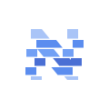
7Pixelcast
The N transmitting itself: solid where it starts, dissolving into blocks as it leaves for the network — a nod to the chunked relay stream under the hood. The dissolve makes it feel alive without any animation.
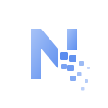
8Constellation
The N drawn as a network map: the host node (ringed, top-left) streams along the N's path to viewer nodes, with extra viewers hanging off the edge. One host, many watchers, no middleman — the whole architecture in one glyph.
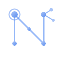
9Quick Tunnel
No letter at all: nested screen frames receding toward a point of light — the tunnel between your screen and everyone watching (a wink at the built-in Cloudflare quick tunnel). The most abstract of the set, and the most ownable as a pure symbol.
10Neon Marquee
The N as a glowing neon sign on a dark tile — "we're live" energy, the movie-night mood of watching something together. The glow is baked into the SVG (no CSS needed) and the dark tile makes it work as an app icon on any background.
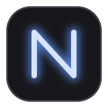
11Blockcut Wordmark
Type-first: NEXTRA in heavy angular stencil letterforms, cut entirely from bars and diagonals, with the ✕ as the accent. No icon needed — the name is the logo, and the ✕ alone becomes the favicon/app icon.
12Tellie the Mascot
Personality play: a friendly little TV with rabbit ears, watching you back. Gives the app a face for empty states, error pages, and the README — the kind of mark people remember and get attached to.
13Retro CRT
A palette break: a little CRT showing a synthwave sunset with scanlines. Movie-night nostalgia instead of corporate blue — warm, loud, and instantly distinctive among tech logos.
14The Beam
The opposite instinct: strip everything to one stark shape — a projector beam opening outward, small at your machine and wide at the audience. Vercel-triangle energy: nothing to date it, trivially reproducible, ownable through sheer restraint.
15Aurora Stream
The premium-app treatment (Linear/Raycast territory): a dark tile with a glowing stream flowing bottom-left to top-right through cyan, blue, and violet. Abstract, dimensional, and it makes the dock icon look expensive.
16Glitch Scan · Deluxe
Concept 6 with the finish turned up: the sliced N now carries a cyan→blue→violet gradient, sits on a gradient dark tile, glows from behind, and gets chromatic-aberration echoes (cyan left, magenta right) peeking out of the slices.
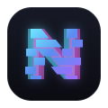
17Pixelcast · Deluxe
Concept 7 upgraded: the N wears the aurora gradient and the escaping blocks shift from blue to glowing cyan as they fly, with a soft light bloom behind the whole mark. The dissolve now feels like energy, not damage.
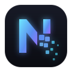
18Constellation · Deluxe
Concept 8 as a night sky: gradient edges, luminous nodes with hot white cores, a glowing gradient ring on the host, faint stars in the background, cyan and violet satellites. The network N becomes a constellation you'd actually wish on.
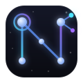
19Quick Tunnel · Deluxe
Concept 9 with depth and light: the receding frames glow in the aurora gradient and the vanishing point becomes an actual point of light — a hot white core in a cyan bloom. The tunnel finally looks like it leads somewhere bright.
20Neon Marquee · Deluxe
Concept 10 remastered: the neon tube is now a gradient (cyan at the base, violet at the tip) with layered wide-and-tight glows, a faint reflection under the sign, and a small sparkle where the tube ends. Full "we're live" marquee energy.
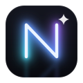
21Linked Screens
Nex as nexus, literally: two screens woven together like chain links — the host's screen and the viewer's screen, physically inseparable. The over-under weave is the connection; cyan for one side, violet for the other, meeting in blue.
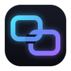
22Pairing
The moment of connection: two screens leaning toward each other with a glowing "connecting…" ellipsis between them — exactly what happens when a viewer enters a room code. Cyan device meets violet device; the white dot is the handshake.
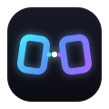
23Synapse
Two orbs — host and viewer — joined by an arc of energy with a spark where they meet. The diagonal composition quietly echoes the N, but the story is pure connection: a live wire between two people.
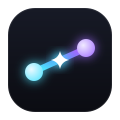
24Nexus
The meeting point itself: streams converging from every direction into one bright core — everyone's screens, one room. It also reads as a star and as the ✕ in nextra. The most symbolic of the set: the logo is the place where people connect.
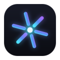
25Infinity Stream
Two loops — two ends of the call — sharing one continuous woven line: an infinity sign flowing from cyan to violet. Connection without a break, stream without an end. Calm, premium, and instantly readable at any size.
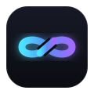
26The Braid
Two strands — cyan and violet — woven over and under each other three times between four peer nodes. Not a symbol of connection; an actual weave. The over-under crossings are real, and the double-helix silhouette is unmistakable at a distance.
27Portal Thread
A luminous thread leaves an orb, passes through a tilted gradient ring — in front of the near rim, behind the far rim — and ends in a sparkle. Real depth from the over-under: the stream threading the portal between the two of you.
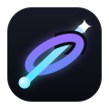
28Orbit
A shared center holds two orbits together: a cyan peer and a violet peer, bound to the same white-hot core, their orbital rings interlacing where they cross. Connection as gravity — two sides that can't drift apart.
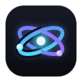
29Chainstream
Three chain links climbing the N's diagonal, each threaded through the next with a true over-under weave, cyan fading to violet along the chain. The diagonal quietly keeps the N; the chain makes the connection literal and gives the mark real intricacy.
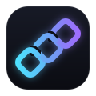
30The Clasp
Two hooks — one reaching from each side — locked through each other like clasped hands, woven over and under at both crossings. The oldest connection symbol there is, drawn as one clean knot in cyan and violet.
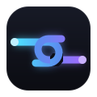
31Node N
The most standard read of "N + connection": a monoline N drawn as a network path, with nodes at all four terminals and a relay point mid-diagonal. Timeless, single-color-friendly, and scales from favicon to billboard.
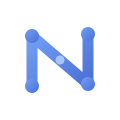
32Union N
Two halves make the letter: the host's stroke from the left, the viewer's stroke from the right, overlapping in the middle of the diagonal — the N only exists because the two sides meet. A classic overlap mark in the app's own blues.
33Beacon N
An N whose last stroke hasn't landed yet: the right stem ends short and a dot floats above it — the peer coming online, the connection about to complete. One quiet idea on an otherwise completely standard monogram.
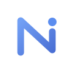
34Ring N
The badge treatment: the N monogram inside a ring — the room — with two nodes sitting on the ring along the diagonal's axis: the two ends of the call. Formal enough for a letterhead, simple enough for a favicon.
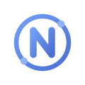
35NX Ligature
The name's two key letters as one monogram: a lowercase n beside an x whose two strokes — one from each side — cross at a glowing meeting point. Reads "nx" at full size and as a crisp abstract mark when small.